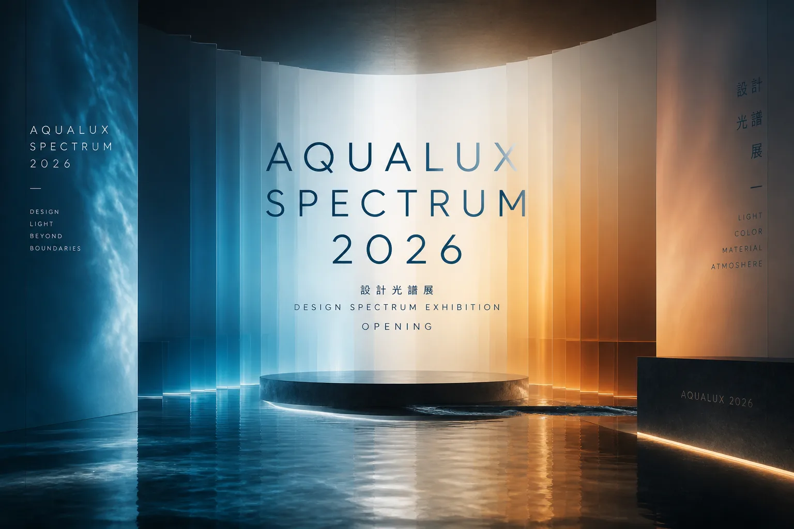
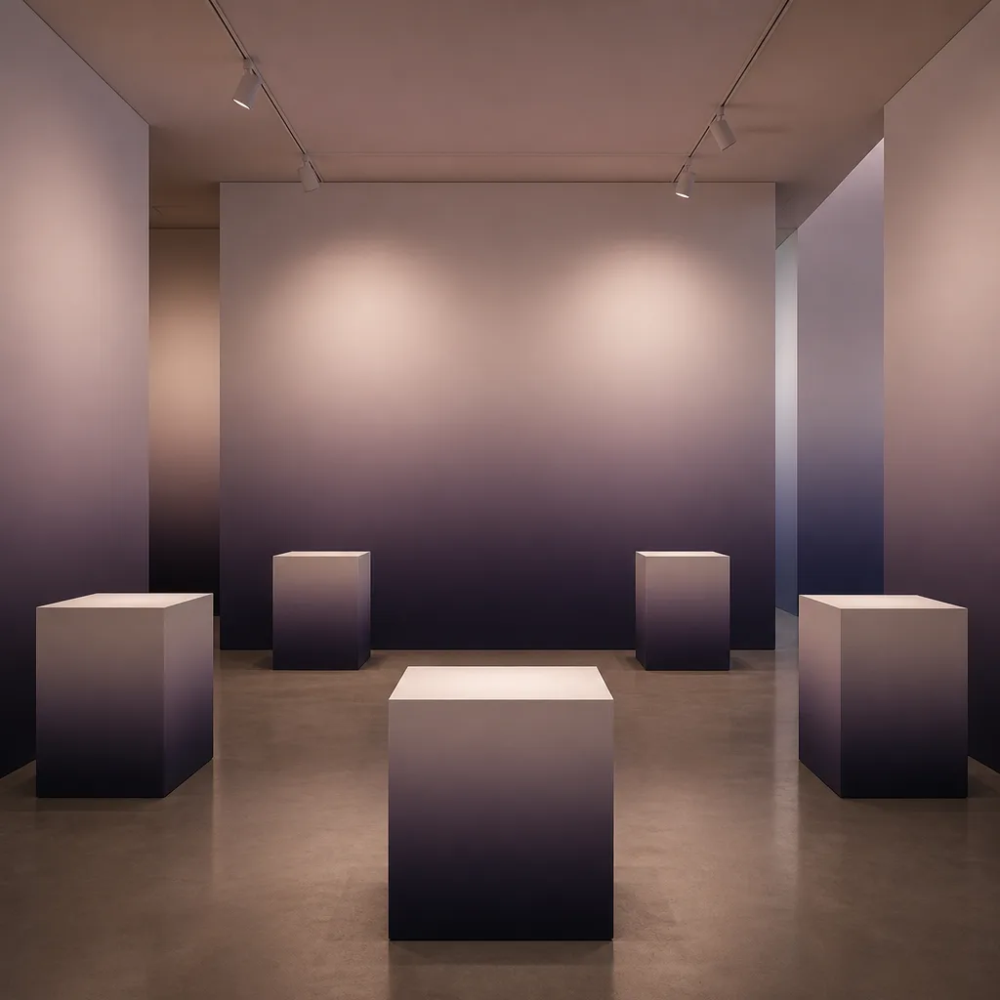
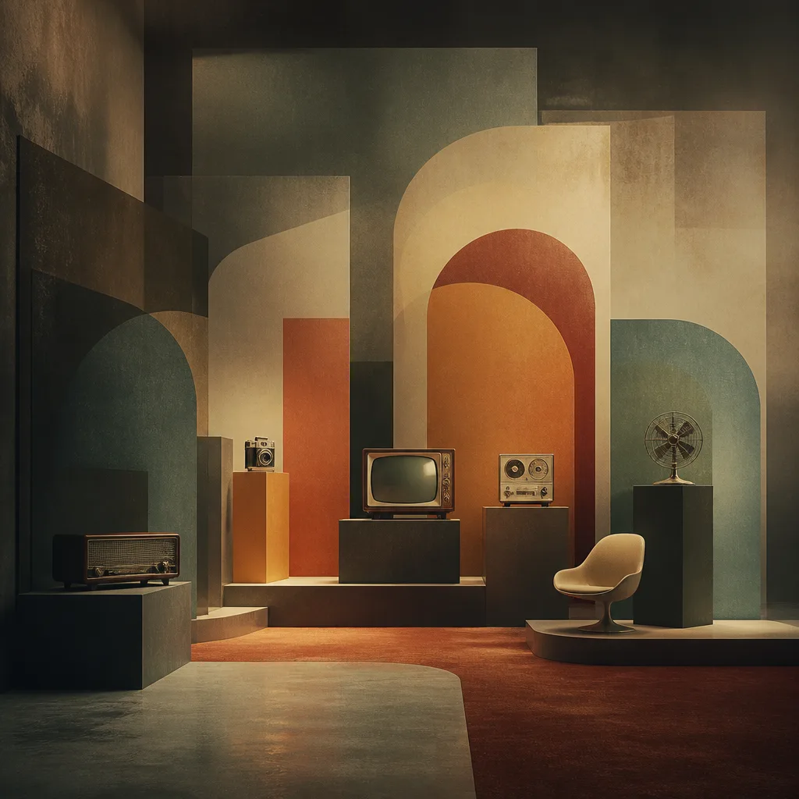
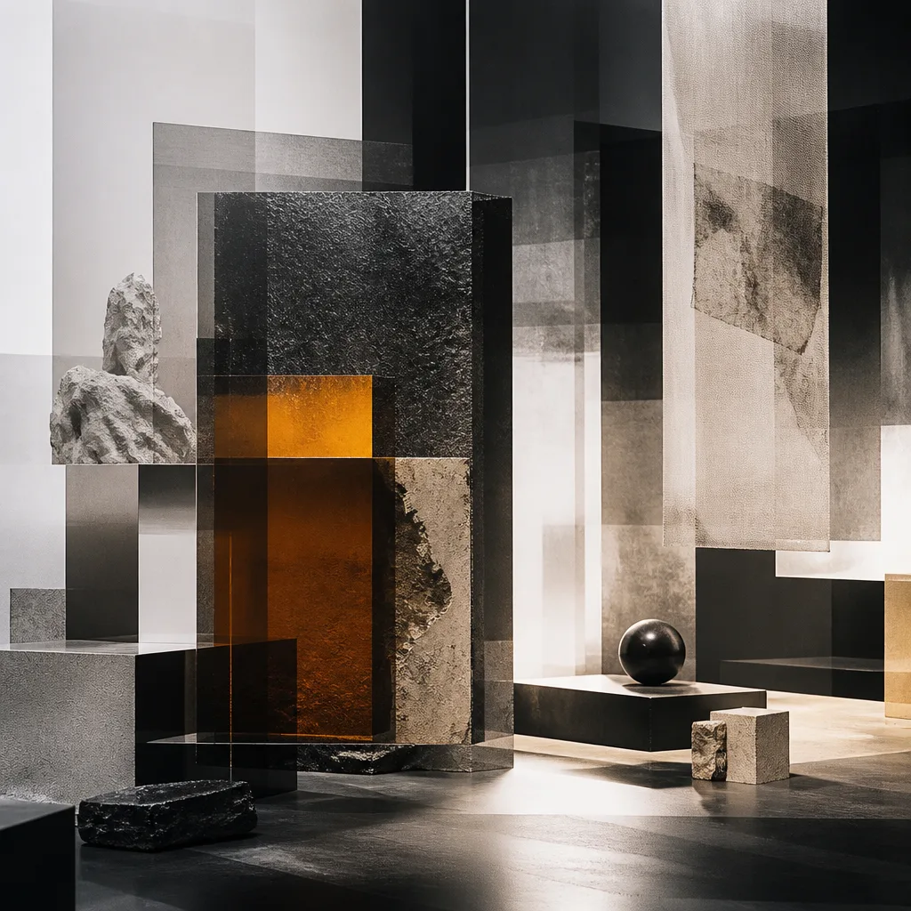
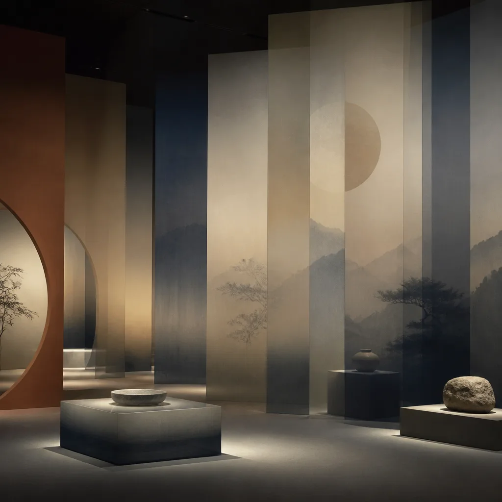
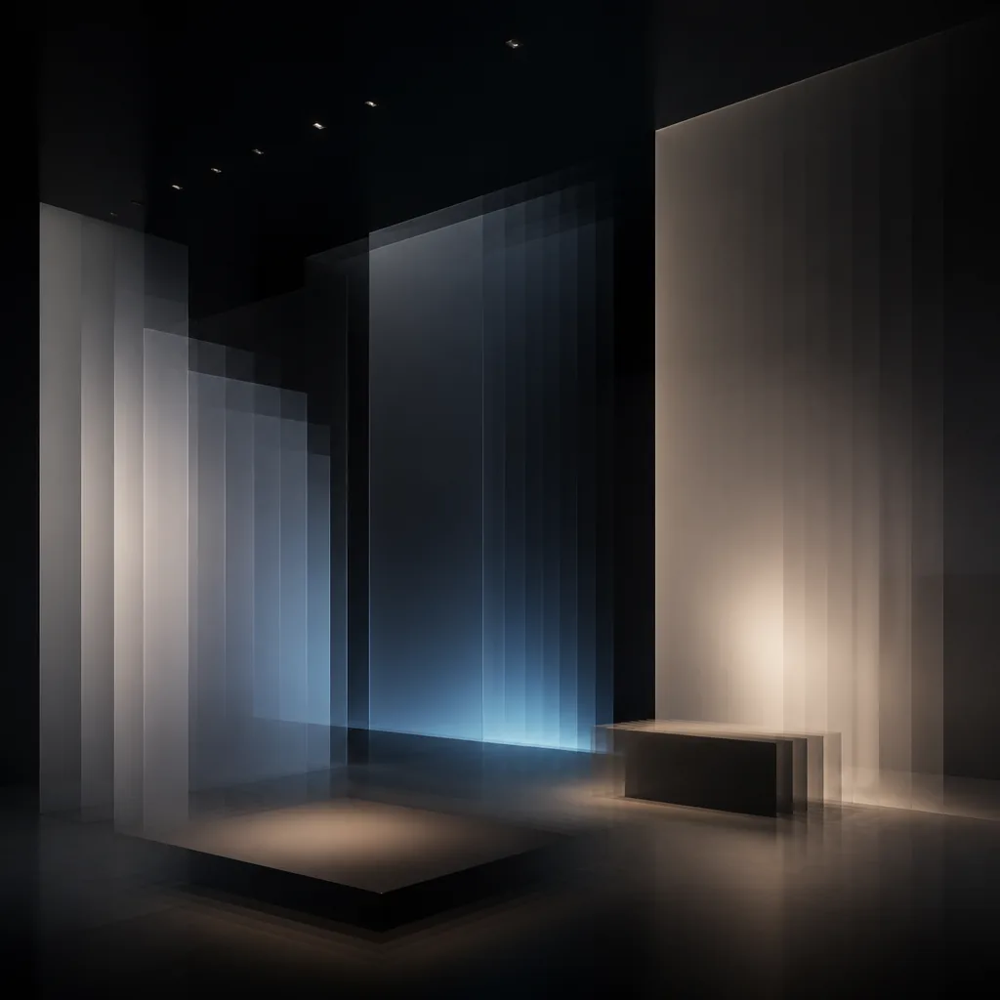

AQUALUX 2026
DESIGN SPECTRUM EXHIBITION
探索設計的無限可能，一場超越視覺界限的感官盛宴。
aqualux 2026 設計光譜展，引領您進入設計的未來。
策展論述
Curatorial Statement在數位與實體交織的當代，設計不再僅是美學的呈現，更是連結人與世界、觸發情感共鳴的橋樑。 aqualux 2026 設計光譜展 旨在探索設計如何以其多樣的光譜，折射出時代的脈動與未來的趨勢。
我們相信，每一件設計作品都承載著獨特的頻率與能量，從極簡的線條到繁複的紋理，從靜態的圖像到動態的互動， 它們共同構成了一幅宏大而細膩的設計光譜。本次展覽，我們將透過 12 位頂尖設計師 的 40 件作品， 引領觀眾深入感知設計的本質、其對日常生活的影響，以及它如何塑造我們的感知與體驗。
設計，是一種無聲的語言，它在功能與美學之間找到平衡，在創新與傳統之間建立對話。 它不僅解決問題，更啟發思考，引導我們走向一個更具意義與連結的未來。
期待您與我們一同，在這場設計光譜的旅程中，發現屬於您的頻率與共鳴。
設計師名單
Featured Designers
D_001
李 Lee
UI / Minimal

D_002
何 Ho
Motion / Flow

D_003
張 Chang
Experimental

D_004
吳 Wu
Editorial / Clean

D_005
林 Lin
Retro / Aesthetic

D_006
陳 Chen
Cultural / Grid

D_007
楊 Yang
Glassmorphism

D_008
方 Fang
Terminal / CLI

D_009
趙 Chao
Sketch / Doodle

D_010
黃 Huang
Interaction

D_011
蘇 Su
Cyberpunk / Glow

D_012
高 Kao
Film Grain
場地資訊
Venue Information
松山文創園區 5 號倉庫 · 靜謐而富有啟發的展覽空間
五大展區
Exhibition ZonesZ01
主流頻譜
Mainstream Frequency
探討當前設計趨勢與主流美學，展示其在各領域的應用與演變。
5F-A1 · 5 作品

Z02
時光殘響
Retro Echo
回顧設計史上的經典元素，融合現代語彙，展現過去與未來的對話。
5F-A2 · 6 作品

Z03
前衛實驗室
Avant Lab
聚焦於實驗性與前瞻性設計，探索科技、藝術與設計的邊界。
5F-B1 · 6 作品

Z04
文化光譜
Cultural Spectrum
從在地文化中汲取靈感，轉化為具有國際視野的當代設計語彙。
5F-B2 · 5 作品

Z05
動態廳
Motion Hall
展示動態影像、互動裝置與沉浸式體驗，探索時間與空間的設計。
5F-C1 · 15 作品
講座排程
Lecture Schedule| 時間 | 主題 | 講者 | 地點 |
|---|---|---|---|
| 12.07 14:00 | 設計的未來趨勢 | 李 Lee | 動態廳 |
| 12.09 10:30 | 動態設計工作坊 | 何 Ho | 前衛實驗室 |
| 12.11 16:00 | 文化符號再詮釋 | 陳 Chen | 文化光譜 |
| 12.14 13:00 | 極簡主義的魅力 | 吳 Wu | 主流頻譜 |
| 12.18 15:00 | 互動體驗設計 | 黃 Huang | 動態廳 |
票務資訊
Ticketing Information
推薦票種
FULL ACCESS 全展期通票
憑此通票，您可在展覽期間無限次進出所有展區， 並享有部分講座優先入場權。最划算的選擇，不容錯過。
SINGLE PASS
單日入場
NT$480
每人 / 每日
- ✓ 單日所有展區入場
- ✓ 展覽紀念電子票根
- ✓ 現場導覽手冊
FULL ACCESS
全展期通票
NT$1,280
每人 / 全展期
- ✓ 全展期無限次入場
- ✓ 部分講座優先入場
- ✓ 獨家數位展覽指南
CURATOR PASS
策展人限定
NT$2,880
每人 / 專屬體驗
- ✓ FULL ACCESS 所有權益
- ✓ 策展人導覽一場
- ✓ 獨家設計工作坊